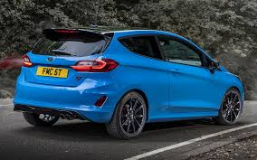
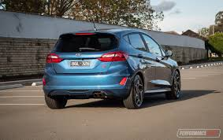
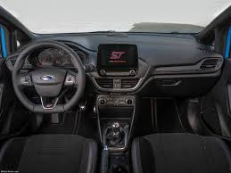
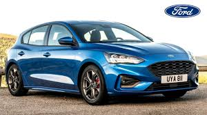
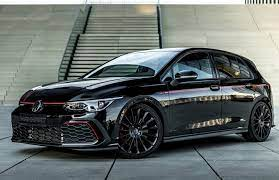
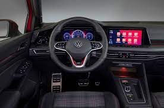
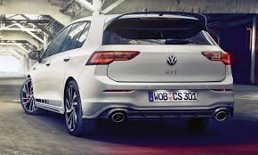
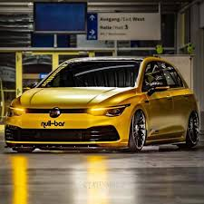
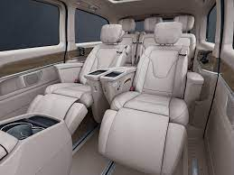
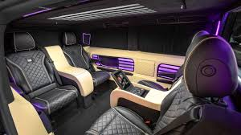

Featured Vehicles
BMW X6
Uncompromisingly non-conformist – the BMW X6 stands for provocative self-assertiveness.
Above all, this is visible in the extremely athletic body of the vehicle along with the new, distinctive design language, which is displayed by the supreme exclusivity and visionary technologies such as the impressive BMW kidney grille ‘Iconic Glow’.

FORD FIESTA
The Fiesta not only looks more mature than the previous model , but it feels more grown-up as well. The drive is noteworthy as is the build quality and standard features on both models.
In Spanish fiesta means to party, and though it may rhyme with siesta there’s nothing sleepy about this dynamo.

GOLF 8 GTI
All of the components inside the GTI are carefully tailored to one another to give the vehicle its distinctively sporty look.
This starts with the stainless steel pedals and extends to the decorative trims and hallmark stitching all the way to the black headliner.
The LED background lighting adds accents of light in all the right places.
MERCEDES V CLASS
With the four-cylinder OM 654 engine and the 9G-TRONIC automatic transmission now available for the first time with V300d, V-Class delivers even more driving fun.
With 176 kW and 500Nm of torque, V300d sets the benchmark in the MPV.